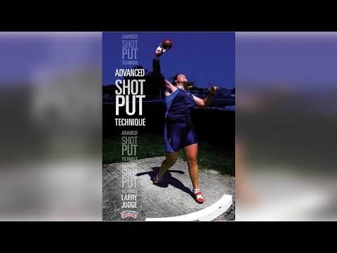
Advanced Shot Put Technique - Standing Throw #1 - with Larry Judge!
Sport · shot put standing throw technique instructional athlete
Championship Productions
Stratified sample from indexed YouTube search results. Playback, resolution, audio, and principal-person counts await media verification.

Sport · shot put standing throw technique instructional athlete
Championship Productions
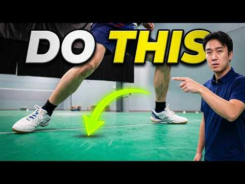
Sport · badminton footwork split step drill coach
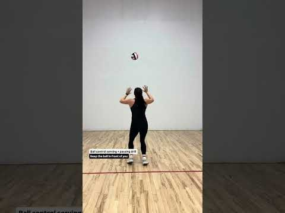
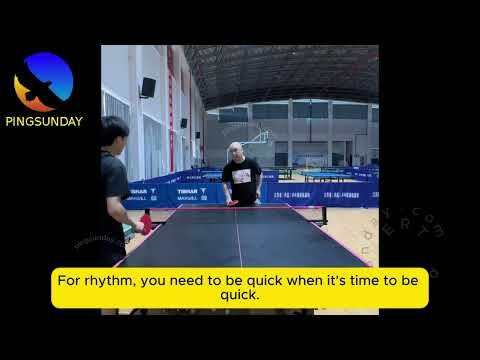
Sport · table tennis forehand backhand multiball drill
table tennis "PingSunday EmRatThich" (270000 followers, Verified) ... ├ coach EmRatThich's YouTube Channel
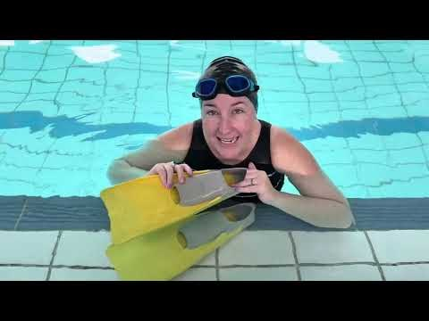
Sport · swimming freestyle breathing drill pool
Sport · tennis serve toss drill practice
Edgar Giffenig Tennis - Effective Instruction
Sport · soccer ball control solo player drill
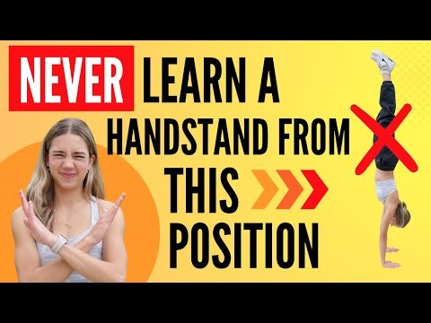
Sport · gymnastics handstand beginner body position solo
Rylie Shaw
Sport · basketball dribbling solo coach drill
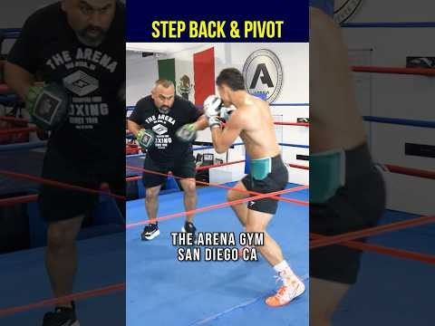
Sport · boxing footwork fundamentals no sparring demonstration coach two steps
Sport · long jump training standing broad jump coach
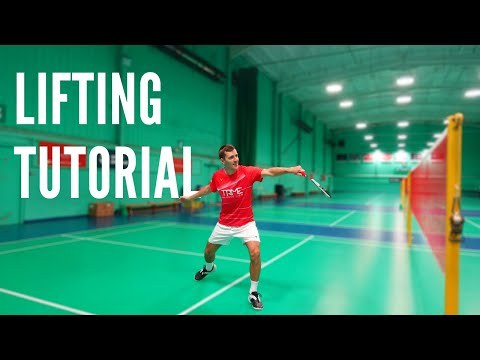
Sport · badminton lift drill net training badminton insight
Badminton Insight (727000 followers, Verified)
Sport · badminton net lunge recovery drill badminton training
Sport · tennis two players groundstroke practice rally coach
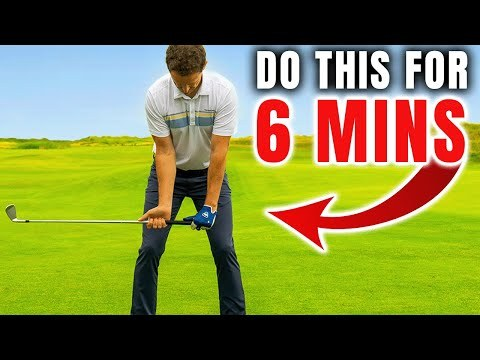
Sport · golf swing practice one instructor
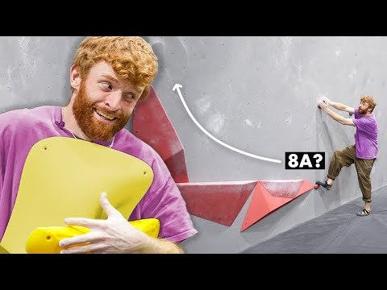
Sport · rock climbing bouldering beta silent gym one climber
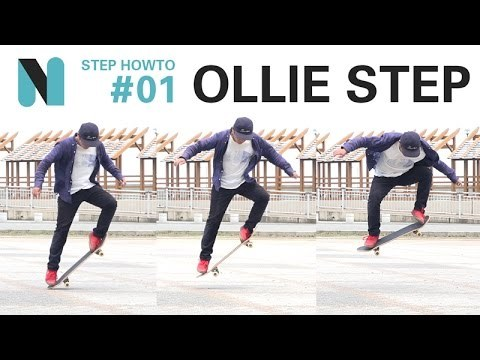
Sport · skateboarding ollie kickflip step by step tutor
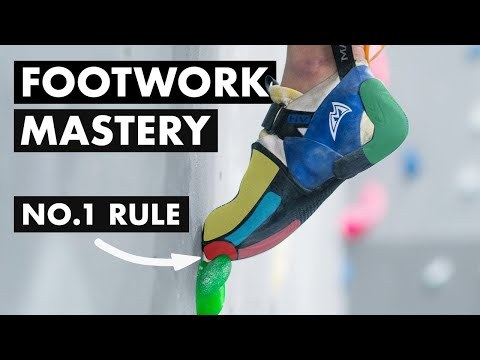
Sport · climbing bouldering technique footwork
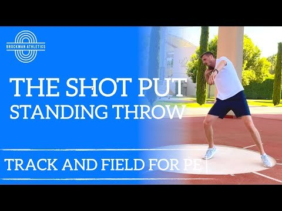
Sport · shot put standing throw technique instructional athlete
Brockman Athletics
Sport · badminton footwork split step drill coach
Tools and craft · watercolor wet on wet demonstration short
Pintar con Marta (130000 followers, Verified)
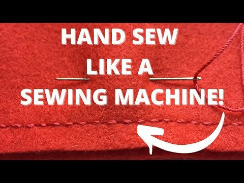
Tools and craft · hand sewing backstitch how to video close up
Tools and craft · beginner origami paper folding crane top down
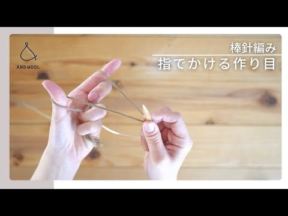
Tools and craft · knitting casting on beginner hands tutorial
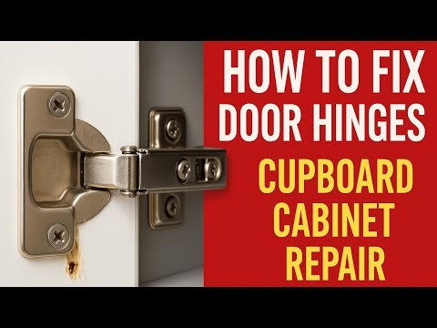
Tools and craft · screwdriver replacing cabinet hinge quick DIY
Quick DIY Video (10400 followers) ... How to Fix Broken Door Hinges | Add New Hinge Bracket to Cupboard or Cabinet Door ... Screwdriver or drill ... A simple DIY fix that'll save you from replacing the entire door!
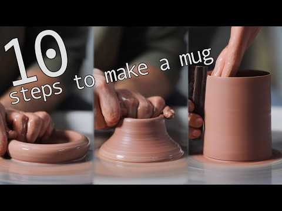
Tools and craft · wheel throwing a clay cup pottery tutorial
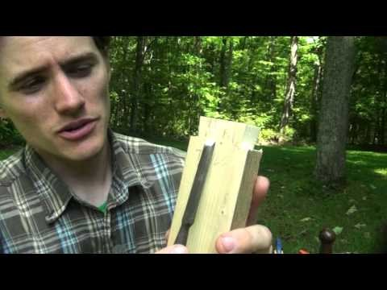
Tools and craft · woodworking chisel hand cut dovetail demonstration
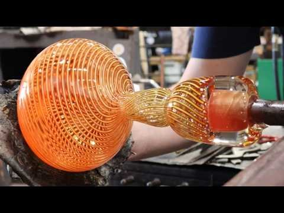
Tools and craft · glass blowing making a glass vase tutorial
GlassGoof (416000 followers, Verified)
Tools and craft · woodturning bowl gouge beginner demonstration
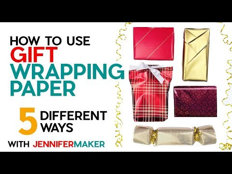
Tools and craft · gift wrapping paper tutorial hands method
Tools and craft · watercolor wet on wet demonstration short
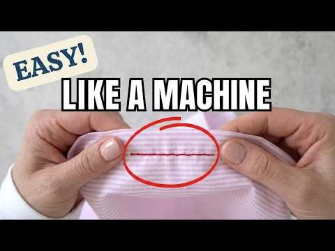
Tools and craft · hand sewing backstitch how to video close up
Tools and craft · beginner origami paper folding crane top down
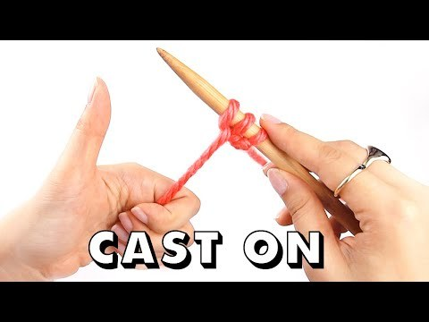
Tools and craft · knitting casting on beginner hands tutorial
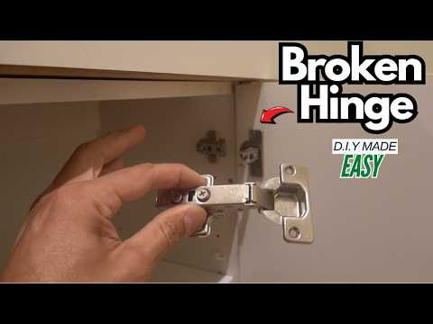
Tools and craft · screwdriver replacing cabinet hinge quick DIY
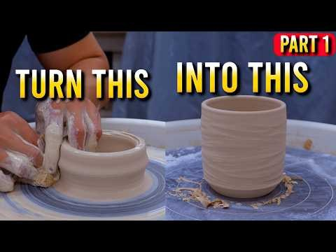
Tools and craft · wheel throwing a clay cup pottery tutorial
Daily life and care · pack carry on suitcase step by step
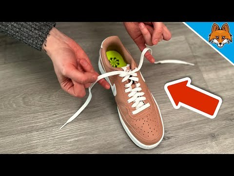
Daily life and care · tie a shoelace short tutorial hands
Smart Fox (568000 followers, Verified)
Daily life and care · organize desk drawers 10 minutes everyday
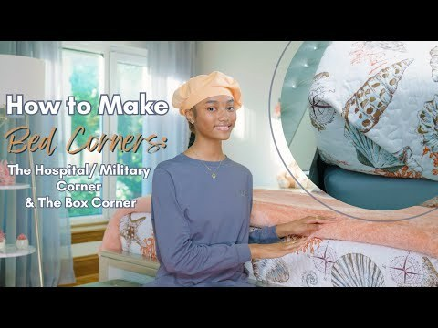
Daily life and care · make the bed hospital corners tutorial single person
Daily life and care · quick simple sorting recycling household bins tutorial single person
Verso
02:42 03:27: And the recycling bin? 00:35 02:42: Waste sorting: simple, basic! 02:42 03:27: And the recycling bin?
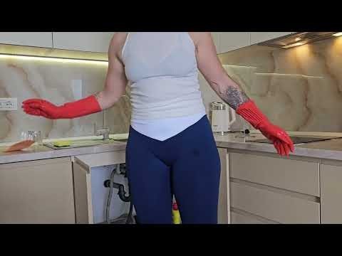
Daily life and care · clean kitchen counter daily routine no talking
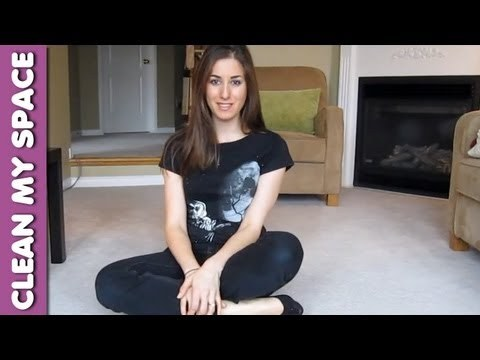
Daily life and care · laundry fold a fitted sheet demonstration one person video
Daily life and care · fold a towel konmari hands tutorial
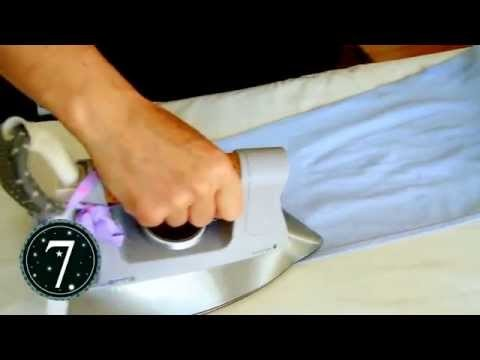
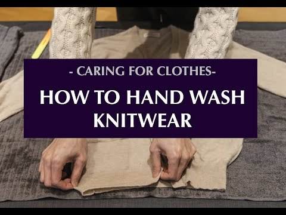
Daily life and care · how to hand wash a sweater at sink actual demonstration
Permanent Style
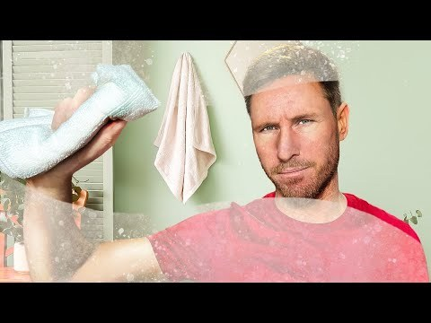
Daily life and care · clean a mirror like a pro home tutorials
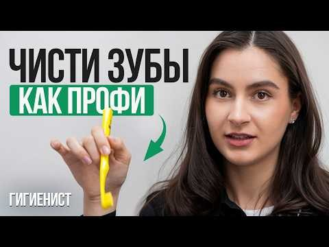
Daily life and care · brush teeth technique adult dentist demonstration
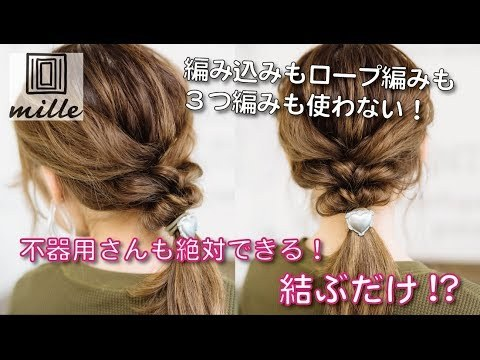
Daily life and care · tie ponytail basic hair tutorial instructional
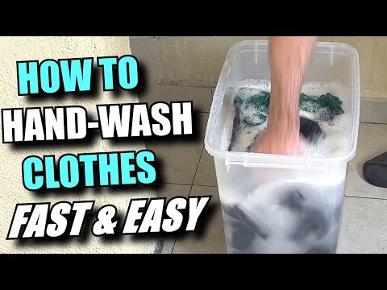
Daily life and care · hand wash clothes sink step by step demonstration
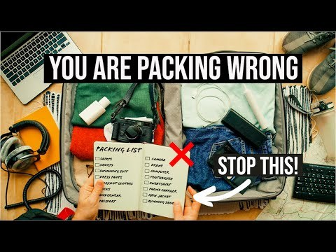
Daily life and care · pack carry on suitcase step by step
The Travel Coaches (78700 followers) ... Watch Next 🎬 13 Unwritten Rules of Flying (that you're probably breaking) • 13 Unwritten Rules of Flying (that you're ... ... ❤ Youtube: / @thetravelcoaches ... 01:40 - Luggage
Daily life and care · tie a shoelace short tutorial hands
Genialne
Food and cooking · make fresh pasta by hand kneading rolling
King Arthur Baking Company
1:44 Knead and Rest the Dough 3:13 Divide Dough and Prep for Rolling 5:05 Roll Dough Until Long and Thin
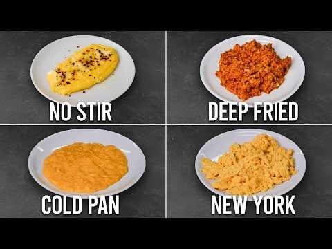
Food and cooking · scramble eggs stove cooking demonstration
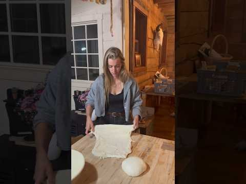
Food and cooking · shape a sourdough loaf demonstration
Ballerina Farm
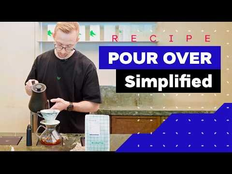
Food and cooking · pour over coffee bloom tutorial kettle
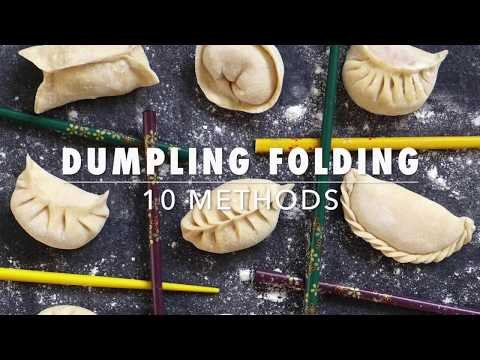
Food and cooking · fold dumplings two ways close up tutorial
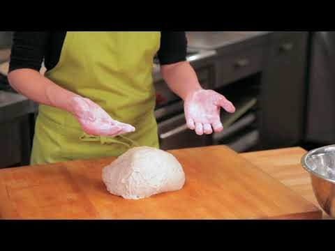
Food and cooking · knead bread by hand dough technique
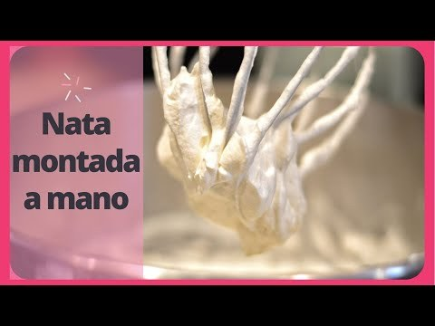
Food and cooking · how to whisk cream by hand video
Food and cooking · how to flip omelette skillet chef demonstration
Eat the Bite
00:25 practice flipping a slice of bread 00:55 melt olive oil and butter in pan, plus THREE SECRETS to making a flip omelet 01:08 add egg to pan and push in the cooked side, let raw egg fill the gaps
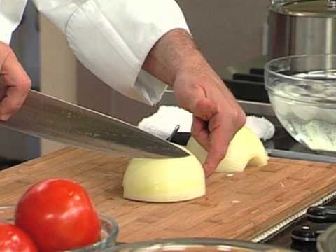
Food and cooking · how to dice onion hands chef tutorial
Food and cooking · make fresh pasta by hand kneading rolling
Food and cooking · scramble eggs stove cooking demonstration
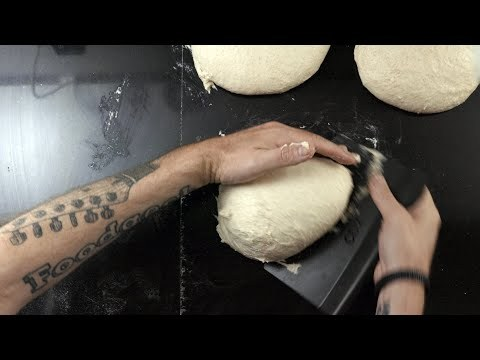
Food and cooking · shape a sourdough loaf demonstration
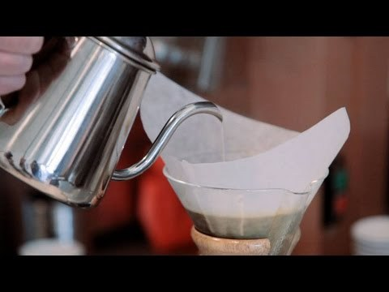
Food and cooking · pour over coffee bloom tutorial kettle
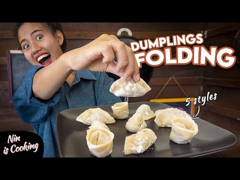
Food and cooking · fold dumplings two ways close up tutorial
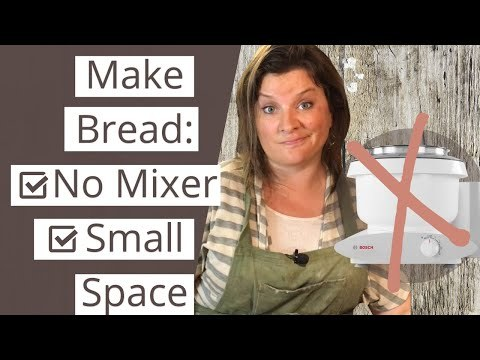
Food and cooking · knead bread by hand dough technique
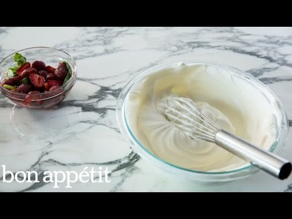
Food and cooking · how to whisk cream by hand video
Music and performance · flute short solo recital live performer
Music and performance · ukulele basic strumming exercise demonstrator
Music and performance · frame drum solo player percussion demonstration in studio
David Kuckhermann
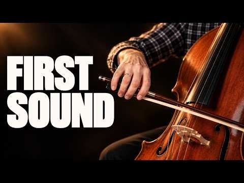
Music and performance · cello bow technique lesson short
Music and performance · juggling three balls tutorial juggling solo
Music and performance · street musician solo trumpet performance short with sound
ZAKAYA EXPLORES
Music and performance · actor monologue performance single actor audition stage short
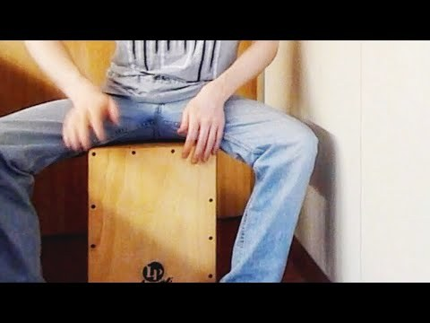
Music and performance · cajon basic beats player tutorial
Ross McCallum (118000 followers, Verified)
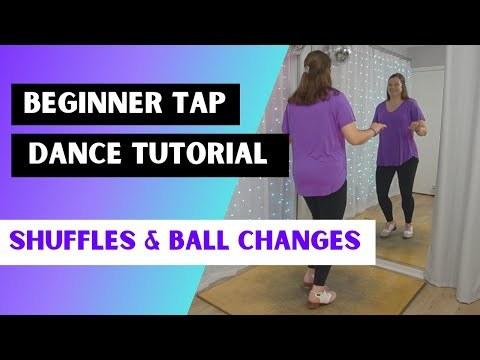
Music and performance · tap dance basic shuffle step demo solo
Music and performance · one person plays jazz piano short live no crowd closeup hands
Music and performance · acoustic guitar fingerpicking close up performance short
Music and performance · drum rudiments single stroke tutorial drummer
Music and performance · piano short solo performance hands recital
Music and performance · violin bowing exercise lesson tutorial
Music and performance · ukulele basic strumming exercise demonstrator
Music and performance · frame drum solo player percussion demonstration in studio
MEINL Percussion Official
Talk and instruction · explain a camera object at museum curator talks objects on camera
Talk and instruction · two astronauts conversation explaining live science experiment video one or two people
Talk and instruction · mock interview interviewee and recruiter in person filmed role play
Diana YK Chan
Talk and instruction · customer service role play two actors conversation
Talk and instruction · English conversation at a cafe two people roleplay
Talk and instruction · job interview role play two people short video
Talk and instruction · museum curator talk object demonstration educator
Illinois State Museum
Talk and instruction · ASL conversation two people signing together filmed at table
Talk and instruction · two person podcast short clip interviewer guest studio conversation
Jake Rasmussen (2089999 followers, Verified)
Talk and instruction · two people explain science demonstration hands
The Action Lab (5160000 followers, Verified)
Talk and instruction · interview short clip two people face to face interviewer and guest conversation BBC interview
This Morning (2540000 followers, Verified)
Talk and instruction · sign language conversation two people deaf ASL
Talk and instruction · mock interview interviewee and recruiter in person filmed role play
DDUKvideo
Talk and instruction · English conversation at a cafe two people roleplay
Talk and instruction · museum curator talk object demonstration educator
McClung Museum of Natural History and Culture
Talk and instruction · two person podcast short clip interviewer guest studio conversation
OneTwo (6690000 followers, Verified)